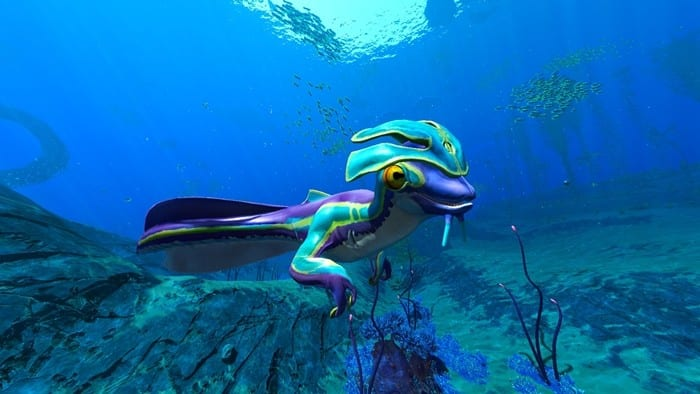

Subnautica: Below Zero is a survival adventure game set in an underwater open world environment and played from a first-person perspective. The player controls xenologist Robin Ayou, who lands on ocean planet 4546B in pursuit of answers about her sister's mysterious death. Like its predecessor, gameplay involves exploring and surviving in alien environments while also completing objectives to advance the game's plot. Players collect resources, construct tools, build bases and submersibles, and interact with the planet's wildlife

During your playthrough of this lovely game you will inevitably encounter the Sea Monkey. Don't panic, as it is relatively harmless, however it will try to steal your equipment for a while so watch out for that.
Overall the game is largely considered a step down from the first one for the lack of scary locations, underwhelming map size, and constant dialogue that some players say ruin the immersion.